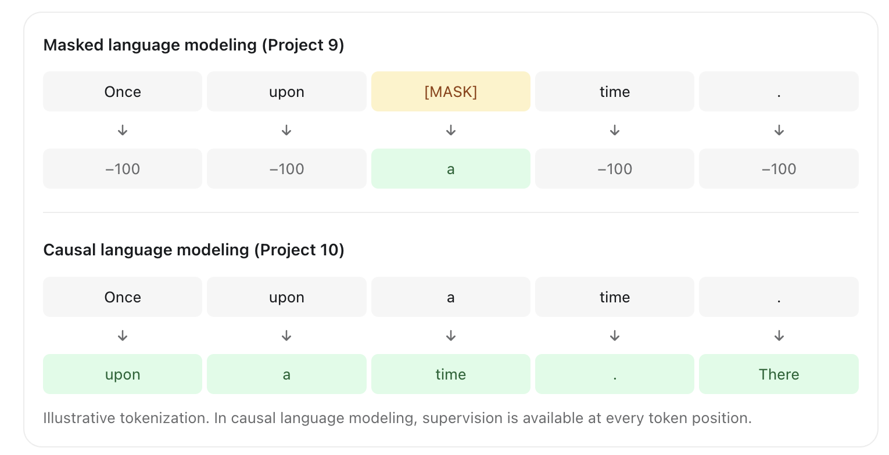
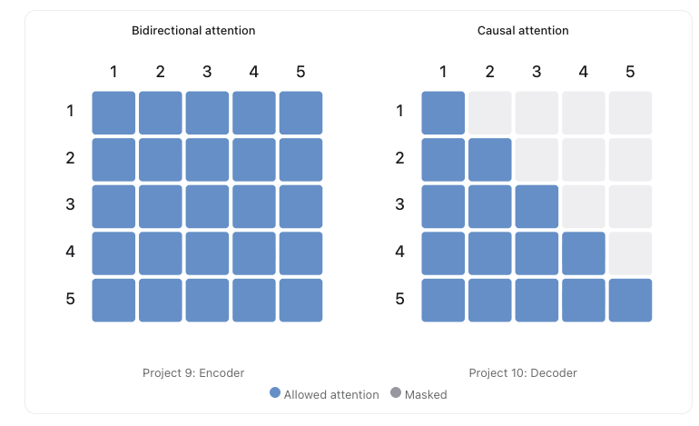
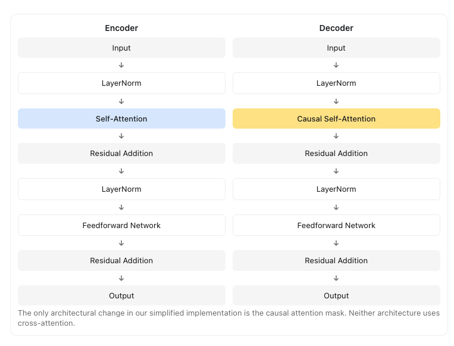
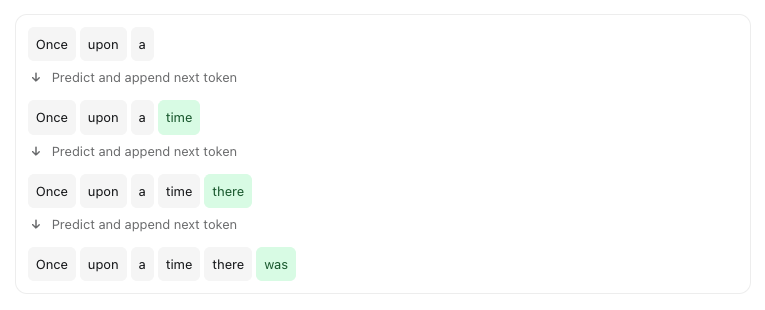

Fall 2026
CSC-372 Project Part 10
Causal Language Modeling

This assignment builds on the previous project, where we implemented a Masked Language Model (MLM) using a transformer encoder. In this project, we will implement a Causal Language Model (CLM) using a decoder-only transformer architecture.
| Project 9 | Project 10 | |
|---|---|---|
| Model | BERT-style | GPT-style |
| Architecture | Encoder | Decoder-only |
| Attention | Bidirectional | Causal |
| Training objective | Masked language modeling | Next-token prediction |
| Supervised positions | 15% | All |
| Trainable parameters | Same | Same |
| Application | Fill in the blanks | Text generation |
In the previous project, we implemented a Masked Language Model (MLM) using a transformer encoder. The model learned to predict missing tokens using bidirectional context.
In this project, we will modify our previous implementation to build a Causal Language Model (CLM) using a decoder-only transformer. Rather than predicting randomly masked tokens, our model will learn to predict the next token in a sequence using only the preceding tokens.
This project is part of a series of four projects that build on each other, culminating in a small instruction-following chatbot. The projects are as follows:
| Project | Topic | Outcome |
|---|---|---|
| Project 8 | Self-Attention | Attention from scratch |
| Project 9 | Masked Language Modeling | Mini-BERT |
| Project 10 | Causal Language Modeling | Mini-GPT |
| Project 11 | Supervised Fine-Tuning | Mini-ChatGPT |
Q1. Load and tokenize TinyStories
Reuse the dataset preparation and tokenization code from Project 9, including:
- TinyStories training and validation datasets.
- GPT-2 BPE tokenizer.
- Compact vocabulary.
encode()anddecode()functions.train_tokensandvalid_tokens.
Use the same SEQ_LEN, BATCH_SIZE and VOCAB_SIZE as in Project 9.
Q2. Create a PyTorch Dataset for next-token prediction
Recall that in masked language modeling, we randomly masked approximately 15% of the input tokens and trained the model to predict the original tokens at those positions.
In causal language modeling, every input position is associated with a target representing the next token in the sequence.

Illustrative tokenization. In causal language modeling, supervision is available at every token position.
Create a class called CausalDataset that inherits from torch.utils.data.Dataset.
Your implementation should extract seq_len + 1 consecutive tokens and return two tensors:
x: The firstseq_lentokens.labels: The lastseq_lentokens.
Use a stride of seq_len between consecutive examples.
Verify that both tensors have shape (SEQ_LEN,) and that:
torch.equal(x[1:], labels[:-1])returns True.
class CausalDataset(Dataset):
def __init__(self, tokens, seq_len=128):
pass
def __len__(self):
pass
def __getitem__(self, idx):
passassert torch.equal(x[1:], labels[:-1]) == TrueQ4. Create DataLoaders
Using your CausalDataset implementation, create two PyTorch DataLoader objects:
Enable shuffling for the training DataLoader and disable shuffling for the validation DataLoader.
Retrieve one batch from train_loader and verify that both tensors have shape (BATCH_SIZE, SEQ_LEN) for a full batch.
# train_loader =
# val_loader =Q3. Causal Self-Attention
Reuse your SingleHeadAttention implementation from Project 9.
Modify the implementation to accept an additional Boolean argument, causal.
class SingleHeadAttention(nn.Module):
def __init__(self, d_model=128):
super().__init__()
pass
def forward(self, x, padding_mask=None, causal=False):
passWhen causal=True, ensure that each token can only attend to itself and preceding tokens.

Use torch.triu() to construct a causal mask and set the corresponding attention scores to negative infinity before applying softmax.
\[ A=\operatorname{softmax}\left( \frac{QK^\top}{\sqrt{d_k}}+M \right) \]
where
\[ M\_{ij}= \begin{cases} 0 & j\leq i\\\ -\infty & j>i \end{cases} \]
Test your implementation
Create two input tensors that are identical in their first four positions but differ in their remaining positions.
x1 = torch.randn(1, 8, 128)x2 = x1.clone()x2[:, 4:, :] = torch.randn(1, 4, 128)Pass both tensors through your attention layer with causal=True.
Verify that the outputs corresponding to the first four positions are identical within numerical tolerance.
Explain why this property is necessary for causal language modeling.
Q5. Transformer Decoder Layer
Reuse your TransformerEncoder implementation from Project 9 to create a new class called TransformerDecoder.
class TransformerDecoder(nn.Module):
def __init__(self, d_model=128):
super().__init__()
pass
def forward(self, x, padding_mask=None):
passThe architecture should remain the same as in Project 9, except that the self-attention operation must now be causal.
\[ X'=X+\operatorname{CausalAttention} (\operatorname{LayerNorm}\_1(X)) \]
\[ Z=X'+\operatorname{FFN} (\operatorname{LayerNorm}\_2(X')) \]

The only architectural change in our simplified implementation is the causal attention mask. Neither architecture uses cross-attention.
Q6. Building a Causal Language Model
Modify your MaskedLanguageModel implementation from Project 9 to create a new class called CausalLanguageModel.
class CausalLanguageModel(nn.Module):
def __init__(self):
super().__init__()
pass
def forward(self, x):
passUse the same architecture and hyperparameters as in Project 9:
| Component | Value |
|---|---|
| Vocabulary | Same as Project 9 |
| Context length | 128 |
| Embedding dimension | 128 |
| Attention heads | 1 |
| Transformer layers | 2 |
| Feedforward dimension | 512 |
| Activation | ReLU |
Replace the Transformer Encoder layers with Transformer Decoder layers.
The output of your model should have shape:
\[ (B,T,V) \]
where \(V\) is the vocabulary size.
Return the logits without applying softmax.
Report the number of trainable parameters in your model and compare it with the number of parameters in your Masked Language Model.
Q7. Training and Evaluating the Causal Language Model
Reuse your training and validation loops from Project 9.
In contrast to masked language modeling, the loss is now computed at every token position.
\[ \mathcal L(\theta)= -\frac{1}{BT}\sum\_{b=1}^{B} \sum\_{t=1}^{T} \log P\_\theta(y\_{b,t}\mid x\_{b,1:t}) \]
Train the model and plot the training and validation losses as a function of epochs.
Calculate the validation perplexity of your model.
\[ \operatorname{Perplexity}=\exp(\mathcal L\_{\text{val}}) \]
Initialize the optimizer and loss function as follows:
model = CausalLanguageModel().to(device)
optimizer = torch.optim.AdamW(model.parameters(), lr=1e-3)
criterion = nn.CrossEntropyLoss()Q8. Predict the next token
Write a function that accepts a string as input and returns the five most probable next tokens along with their probabilities.
In your implementation:
- Encode the input text using your
encode()function. - Pass the resulting tensor through the model.
- Extract the logits corresponding to the final token position.
- Apply softmax to obtain a probability distribution.
- Use
torch.topk()to identify the most probable tokens. - Decode the predicted token IDs.
Test your function with the following prompts:
def predict_next_token(model, text, k=5):
pass
predict_next_token(model, "Once upon a")
predict_next_token(model, "There was a little")
predict_next_token(model, "The dog was very")
predict_next_token(model, "She went to the")Q9. Autoregressive Text Generation
We can generate more than one token by repeatedly passing the generated token back into the model as part of its input.

Implement the following function:
def generate(model, prompt, max_new_tokens=100):
passAt each iteration:
- Pass the current token sequence through the model.
- Extract the logits corresponding to the final token position.
- Convert the logits into probabilities.
- Use
torch.multinomial()to sample the next token. - Append the sampled token to the sequence.
If the sequence becomes longer than SEQ_LEN, pass only the most recent SEQ_LEN tokens to the model.
Use model.eval() and disable gradient computation during generation.
Generate stories using the following prompts:
generate(model, "Once upon a time", 200)
generate(model, "There was a little boy", 200)
generate(model, "One day, a cat named Bobby", 200)
generate(model, "The princess lived in", 200)Q10. Temperature
Modify your generate() function to accept an additional parameter called temperature.
def generate(model, prompt, max_new_tokens=100, temperature=1.0):
passBefore applying softmax, divide the logits by the temperature.
\[ P(x_i)=\frac{e^{z_i/\tau}}{\sum_j e^{z_j/\tau}} \]
Generate a story using the same prompt and the following temperature values:
| Temperature | Expected behavior |
|---|---|
| 0.1 | Nearly deterministic |
| 0.5 | Conservative generation |
| 1.0 | Original probability distribution |
| 1.5 | More diverse generation |
| 2.0 | Highly random generation |
Compare the generated stories in terms of coherence, creativity, grammatical correctness and repetition.